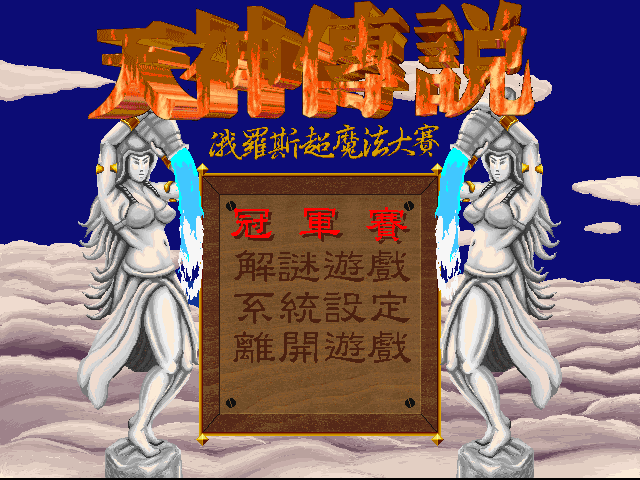
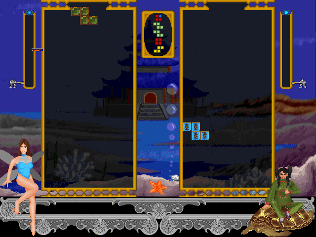

名稱：天神傳說 (Magic Tetris，中文版) 簡介：泰騰1996年出品的俄羅斯方塊遊戲 [待補]。

保護：光碟 備註：遊戲會存取檔案MSCD001進行光碟檢驗，在DosBox上可能會有相容性問題導致無法檢驗 成功，可進行下列修改略過光碟檢驗（仍需放入光碟），若MTCD.EXE無法成功執行， 請改用光碟上的MTCD3.EXE看看： MTCD.EXE, MTCD3.EXE 85 C0 74 27 68 -- -- EB -- -- 遊戲程式另外會檢驗音軌資訊是否正確，可進行下列修改以略過： MTCD.EXE, MTCD3.EXE 85 C0 74 0A 6A 00 -- -- EB -- -- --